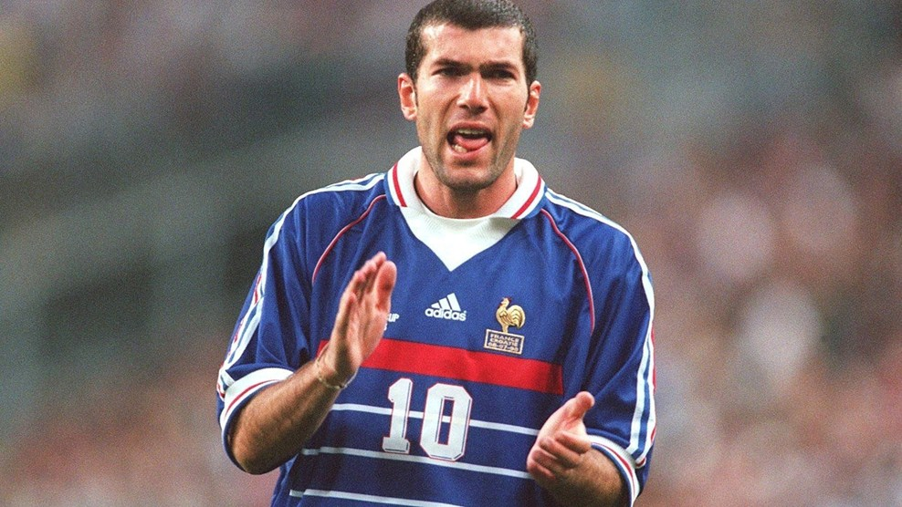
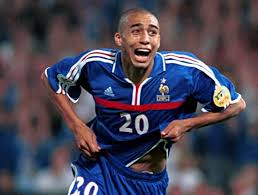

AS MONACO.
See for yourself|  |
THE GREATEST "Que des N°10 dans ma Team"Zinédine Yazid Zidane, né le 23 juin 1972 à Marseille, est un footballeur international français devenu entraîneur. Durant sa carrière de joueur, entre 1988 et 2006, il évolue au poste de milieu offensif, comme meneur de jeu. |
|  |
DAVID TREZEGUET "Trezeguooooool"David Trezeguet, né le 15 octobre 1977 à Rouen, est un footballeur international français possédant aussi la nationalité argentine. Pendant sa carrière, il évolue au poste d'attaquant. |